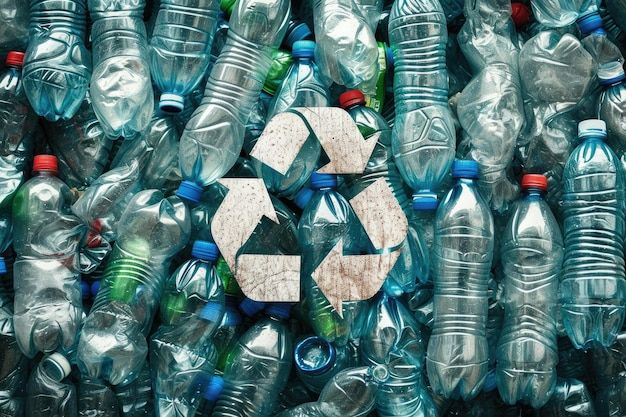

Japón cuenta con una de las tasas de reciclaje de envases de plástico más altas del mundo, alcanzando el 87%. Este logro se debe a un sistema eficiente de clasificación y recuperación, así como a la participación activa de la ciudadanía y la industria.
